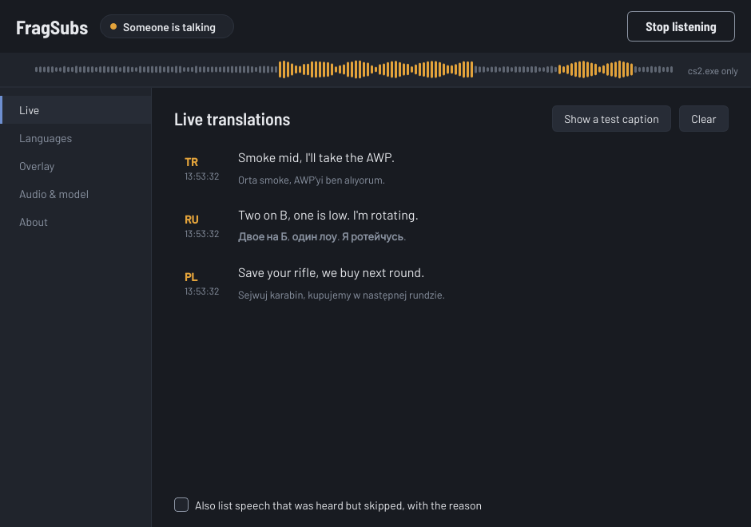

Voice chat translator for Counter-Strike 2
Live English subtitles for your teammates.
Teammate talking Russian, Polish or Turkish? FragSubs listens to the voice chat, translates what they say, and shows it in English on top of your game about a second later.
Free for Windows 10 and 11. Updates itself.
- 32 languages
- Runs on your own PC
- Never touches the game
How it works
Like subtitles on a video, but for voice chat.
-
1A teammate talks
You hear it in voice chat, but you don't speak Russian. FragSubs listens only to the game's sound, so your music stays out, and it ignores gunshots and explosions.
-
2FragSubs translates it
A speech model runs on your own graphics card. It works out which language was spoken and translates it. Voice chat is never sent anywhere.
-
3You read it in English
The English appears over the game, at the bottom of your screen. Mouse clicks go straight through it, and it fades away after a few seconds.
Languages
32 languages, all into English.
Teammates who switch between English and their own language in one sentence come through fine too. Turn off the languages you already speak, so they don't fill your screen.
- Russian
- Ukrainian
- Polish
- Turkish
- German
- French
- Spanish
- Portuguese
- Italian
- Chinese
- Japanese
- Korean
- Arabic
- Dutch
- Czech
- Slovak
- Hungarian
- Romanian
- Bulgarian
- Serbian
- Croatian
- Greek
- Swedish
- Danish
- Norwegian
- Finnish
- Kazakh
- Hebrew
- Hindi
- Vietnamese
- Thai
- Indonesian
Highlighted languages are on from the start. You can switch any language on or off in the app.

The FragSubs window, where you change settings and see everything that was said this match.
- Private
- Everything runs on your PC. Voice chat is never uploaded and nothing you hear is saved.
- Safe with VAC
- FragSubs is a separate program that only listens to the game's sound. It never touches the game's memory or files.
- The original too
- Show what was said under the translation as Привет, as Privet, or both. Chinese gets pinyin, Korean gets romanisation.
- Always current
- FragSubs checks for a new version when it starts and updates itself. Your settings stay.
Get started
- Download the installer and run it. Windows may warn that the app is new: choose More info, then Run anyway.
- In Counter-Strike 2, set Settings, Video, Display Mode to Fullscreen Windowed. Plain fullscreen hides every other window, including the subtitles.
- Open FragSubs and click Start listening. The first time it downloads the speech model (about 3 GB) and, for NVIDIA cards, NVIDIA's libraries (about 1.2 GB).
- Join a match. The bar at the top of FragSubs turns gold when someone talks.
What you need
- Windows 10 (version 2004 or newer) or Windows 11
- An NVIDIA GeForce RTX card with about 4 GB of free video memory, recommended
- About 6 GB of disk space for the app and the speech model
No NVIDIA card? FragSubs also runs on the processor with a smaller model. It is slower and a little less accurate.
Questions
Does it translate what I say?
No. It works one way: you read your teammates in English. The game doesn't play your own voice back to you, so FragSubs only hears the others.
Can I get banned for using it?
FragSubs doesn't inject into the game, read its memory or change its files. It reads the audio Windows already plays, like a recording app, and draws its own window on top, like Discord's overlay.
Does it cost anything, or need an account?
No. FragSubs is free and open source, and there is no account. Translating happens on your PC; it only goes online to download the speech model once and to check for updates.
Does it slow down my game?
Hardly. On a modern RTX card the speech model needs a few hundred milliseconds of GPU time per sentence, and nothing while it's quiet. Counter-Strike 2 is mostly limited by your processor, not your graphics card.
How good are the translations?
Clear sentences come out well. Short callouts in the middle of a gunfight, bad microphones and heavy slang are harder. FragSubs skips what it can't make out instead of guessing.
Can it tell who is talking?
Not in in-game voice chat. The game mixes all teammates into one sound before it reaches Windows.
Does it work with Discord or other games?
Yes. It is made for Counter-Strike 2, but in Audio & model you can type another game's program name under Game program, or set What to listen to to Everything I hear to include Discord.
Understand every callout.
Free for Windows 10 and 11.